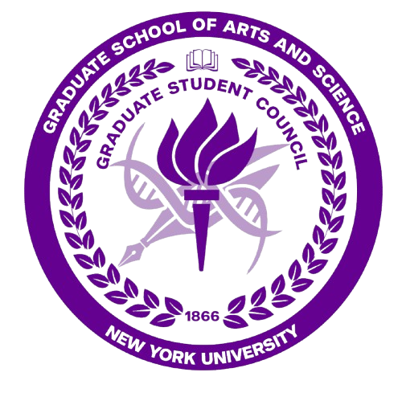

Work
Experience
AI & Data Analyst
Kahana
Establish the data foundations that supported product development and growth. From designing synthetic data structures and shaping the 0–90 day user journey strategy to building automated reporting systems in Supabase, my work focused on turning complex ideas into actionable insights. By combining analytics, automation, and strategic thinking, enabled the team to better understand user behavior, track engagement, and make data-informed decisions at scale.
Researcher
NYU Langone Health
Contributed to healthcare research focused on medical imaging and data-driven analysis. Developed and automated data processing pipelines for large-scale MRI datasets, streamlining workflows that supported advanced imaging research and machine learning applications. This work allowed me to combine software engineering, data processing, and research to solve complex challenges in healthcare.
Technical Specialist
Tata Consultancy Services
Worked on enterprise-scale technology solutions while leveraging data and automation to improve operational efficiency and system reliability. Collaborating with cross-functional teams, analyzed system performance, optimized processes, and supported critical business operations. worked on enterprise-scale technology solutions while leveraging data and automation to improve operational efficiency and system reliability. Collaborating with cross-functional teams, analyzed system performance, optimized processes, and supported critical business operations.
Beyond work
Leadership & Teaching
Teaching Assistant
Data Communication & Networks, NYU
Supported students in understanding networking concepts, data communications, and network protocols. Assisted with coursework, laboratory exercises, and project evaluations while helping create an engaging learning environment. Strengthened communication, mentorship, and technical teaching skills through one-on-one student support.

Director of Operations
GSAS Graduate Student Council, NYU
Led planning and execution of initiatives serving the graduate student community at NYU. Organized large-scale events and networking opportunities, managed logistics and cross-functional collaboration, creating meaningful experiences that fostered engagement and community among students.
Academic
Education
MS in Information Systems
New York University
BE in Computer Science
Jammu University